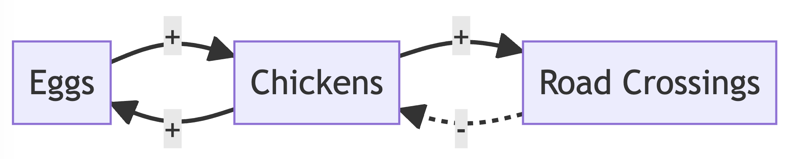
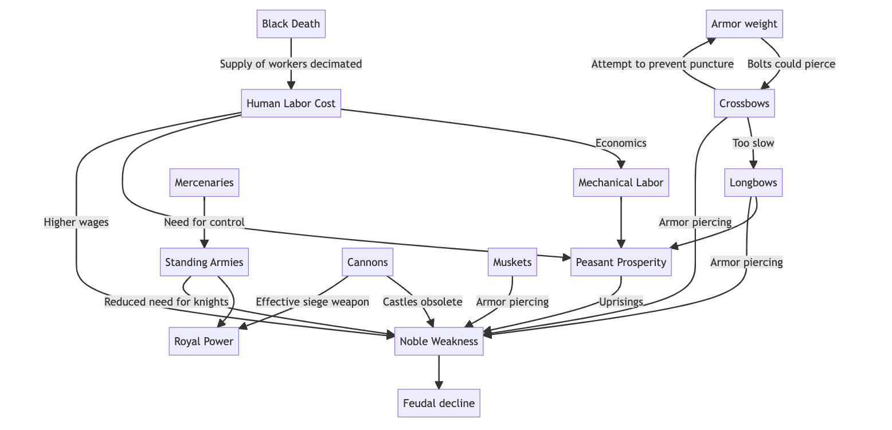
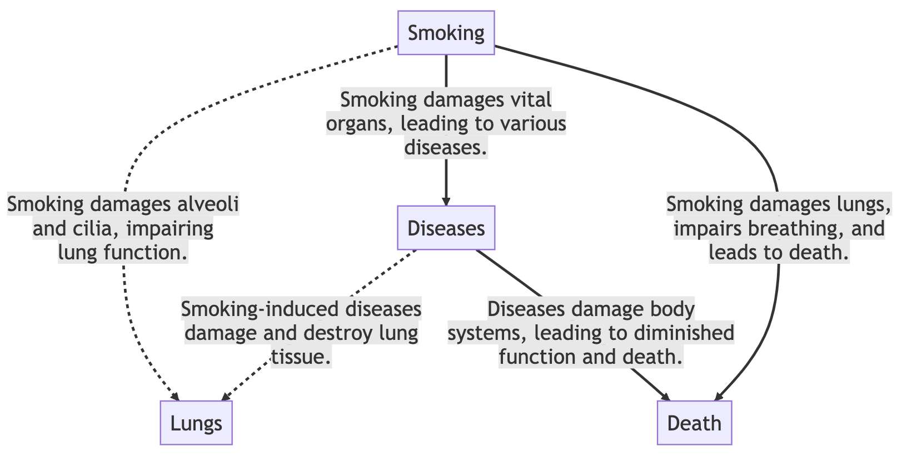
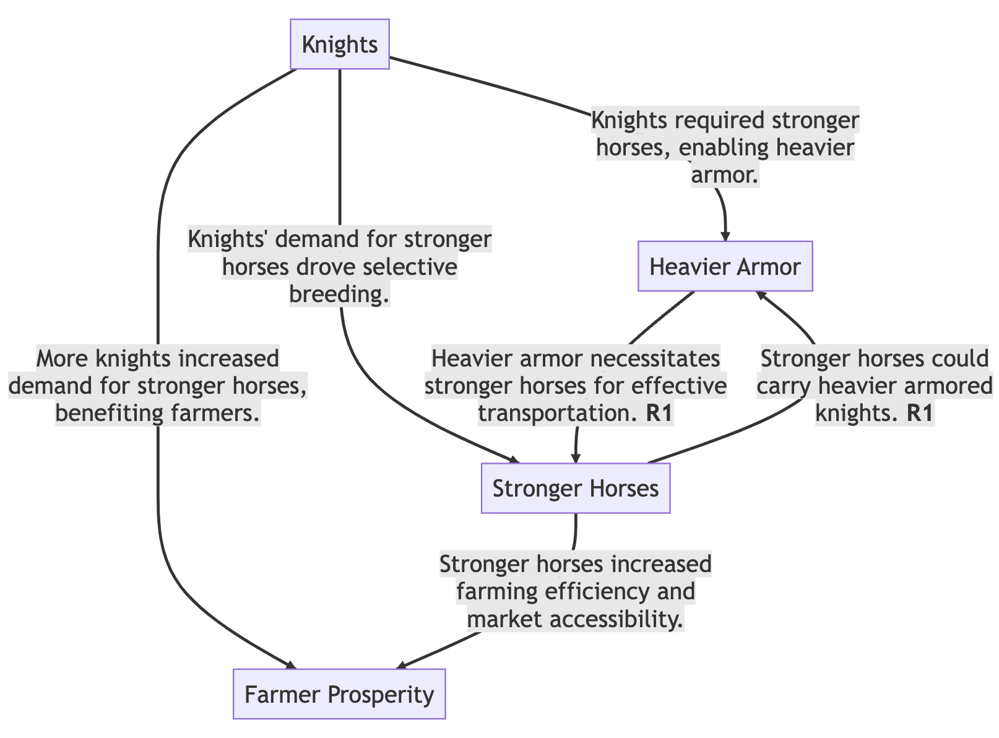

Tools for Thinking in Systems
With this post I aim to synthesize some ideas from the Tools for Thought movement (e.g. Roam) with Systems Thinking (e.g. feedback loops). The result, as advertised in the title, is a tool for helping people think in systems. Let me first explain what I'm talking about, then walk you through some design considerations, and finally show you a prototype which takes a description of a system and converts it into causal loop diagram. Imagine if every news article included a little visual explainer to help you understand the story better.
If you're impatient (who can blame you?), here's a quick demo:
Systems and causal loop diagrams
A couple of years ago, I read and was inspired by Thinking in Systems: A Primer by Donella Meadows. One of the tools presented in Meadows' book are causal loop diagrams. Here's a simple riff on a classic causal loop diagram to help us grapple with chicken populations. More chickens mean more eggs, and more eggs mean more chickens (a reinforcing loop). As we know, chickens have a certain propensity for crossing the road, and the more chickens, the more chaotic the road crossings with unfortunate consequences for their overall population (a balancing loop).

Causal loop diagrams are a way to visually represent a complex system. They can be a good visual summary, giving us a sense of factors and feedback loops that relate to a topic.
Over the last couple of years I got a bit nerdy about the topic and "modeled" some of my own systems based on some of my reading. For example, based on a series of lectures about the Middle Ages, I sketched out causal loop diagrams that illustrated some secular trends. These can be found in the public version of my note corpus.

I found the process insightful as a way to process a complex topic, and the results to be interesting to share and generalize from. However, the process is time consuming and challenging. Could an AI help here?
There is no canonical mapping between a system and a corresponding causal loop diagram. In other words, there can be many diagrams which correspond to the same system, each emphasizing different aspects of it. Also, while they are well suited to illustrating fuzzy problems, causal loop diagrams are not well suited for rigorous system analysis12.
Tools for thought… for what?
Popular Tools for Thought like Roam and Muse are general purpose organizational tools that help you to think and capture all kinds of thoughts. The new generation of these generic note-taking apps is now being imbued with AI. Some of these AI-powered features include:
- Transcribing audio and providing robust transcriptions (e.g. Otter)
- Summarizing tracts of text into something more terse (e.g. Reflect and Mem)
- Offering grammar correction or stylistic suggestions (e.g. LanguageTool)
What if you had a tool that helped you think or create in a specific domain? Here are a few examples I found compelling:
- TextFX is a suite of "AI-powered tools for rappers, writers and wordsmiths". These tools for thinking like a poet help people come up with similes, make a scene more unexpected, find alliterations, and fuse two concepts together.
- Elicit is a tool for thinking like a researcher, helping you quickly find prior art on a topic you might have no idea about, well outside your area of expertise.
So now for the synthesis. What could a tool for thinking in systems look like?
A tool for thinking in systems
Given a description of a system, can an AI generate a causal loop diagram representation for it? Imagine if every news article included a little diagram explaining the systemic background for the news story.
The current state of AI is not quite ready to tackle this problem without human intervention. So I strove to create a tool that would help people co-create with the help of an LLM. The system's vibe should not be thanks for the text, here is the corresponding CLD, but a metaphorical dialog: is this the CLD you are imagining? Or here's a crazy take on this, WDYT?, with the person using the tool making the appropriate changes.
This dialectic approach has the potential to be useful, even if you are talking to yourself or an inanimate object. Studies have shown that conversations with yourself, as in distanced self-talk where we give ourselves advice by pretending like we’re advising a friend with the same issue, seem to help us get unstuck. In software engineering, rubber duck debugging is a method of debugging code by describing your approach to a lifeless rubber duck sitting on your desk.
Principle 1: muses > mentats
I mentioned earlier that there is no canonical causal loop diagram for a given complex system. My goal was not to have a sequence of LLM invocations result in some perfect output, but to make headway on the cold start problem I found when attempting to model. You have a blank canvas; where should you begin? At what level of granularity should you be thinking about? What entities are at play? What relationships matter?
Thus, the first principle I've adopted is muses over mentats (from ChatGPT as muse, not oracle). Mentats in Dune are computer-like humans (long story), able to quickly compute and predict and produce factually correct results to help nobles rule. In contrast, Muses were inspirational Greek goddesses of literature, science and the arts, colloquially serving as someone's source of artistic inspiration. In other words, correctness is optional; it is sufficient to be inspiring.
This principle jives well with the strengths and weaknesses of generative AI. LLMs can simulate reasoning and create a large volume of content quickly, but tend to hallucinate. Grounding LLMs in facts remains an open research problem.
Principle 2: bikes > genies
How can the user feel like she is co-creating with a helpful partner, rather than putting her trust in a lifeless machine?
Bikes amplify our innate human abilities to get to where we're going, while genies are simply teleport us to our destination. How do they do it? Nobody really knows! Hopefully you don't run out of wishes, and hopefully the Genie doesn't make any mistakes. And given that AIs make many mistakes, we need to give people a lot of control!
What's needed here is not a genie to get you the answer. Instead, people need a tool to support getting to their own answer.
That these LLMs fib might not strictly be a bad thing. For example, if a generated diagram is blatantly incorrect, a user may be tempted to jump in and fix it, leading to new insights! After all, we all know what happens when someone is wrong on the internet. The principle of bikes over genies ensures that people have the ability to make corrections where needed.
Some examples
Before diving into implementation details of my little tool, here are two examples of causal loop diagrams this system is capable of producing.
This diagram is generated from a paragraph on the Simple Wikipedia page "Tobacco Smoking":

This diagram is generated from some of my observations about medieval history:

A few words about these diagrams:
- Boxes are entities involved in the system.
- Solid edges labeled with
+'s are direct relations (more Source causes† more Target). - Dashed arrows labeled with
-'s are inverse relations (more Source causes† less Target). - Edge labels provide an explanation for why the relationship exists.
- Bolded "R" and "B" in labels indicate a Reinforcing and Balancing feedback loop, respectively.
I go over both in the demo video.
Prototype implementation details
At a high level, the prototype works as follows:
- Extract entities based on description
- Check if entities are directly related (e.g. mo money ➡️ mo problems)
- Check if entities are inversely related (e.g. more children ➡️ less money)
- For every relation, come up with a terse explanation
- Generate the corresponding causal loop diagram
- Label any reinforcing or balancing feedback loops
Entity extraction (Step 1)
Entity extraction is done through an LLM, not because that is a good idea, but because it was expedient from a prototyping perspective. This is relatively uninteresting, and I used a straightforward prompt template like this:
Text: ${groundingText}
The following ${entityCount} entities appear in the text above:
-
Here, groundingText refers to the system description and entityCount is a configurable number.
Causal entity relationships (Steps 2-3)
I took a brute force approach to entity-to-entity causal relationships. Once all entities are available, we check each ordered entity pair to see if and how they are related. For each pair, I use the same LLM to check if there is a direct relation with the following prompt template:
Text: ${groundingText}
The text above suggests that more ${entity1} causes more ${entity2}. Answer one of "true" or "false".
To check for an inverse relation, I replaced "more" in the prompt above with "less".
Now whether the model obeyed the request and produced a single word response "true" or "false" is another question. The state-of-the-art OpenAI LLM I used produced a variety of results with varying frequencies:
| Result | Frequency |
|---|---|
| true/false | 50% |
| True/False | 30% |
| something else | 20% |
But this is still good enough. In practice, 80% of the time, parsing the result was trivial. The rest of the time, we treat the result as false.
In some rare cases (I'd estimate 5% of the time), the model would produce both a direct and inverse relationships. This is a sort of logical contradiction which I treated as a failure mode. In these cases, I ignored both relationships.
My approach here is pretty simple. Another interesting approach was taken by Long and her collaborators3 was to evaluate the strength of causality, by looking at the number of times the LLM responds positively or negatively. The same paper also notes that the prompt used matters quite a bit. They experimented with three variations on a prompt similar to the one I used:
- Introduced an authority by prepending something like
According to Big Pharma... - Altered the linking, for example replacing "causes more" with something like "increases the likelihood"
- Rephrased entity names to be more specific.
These prompt engineering tweaks all made a difference and there wasn't a clear winner.
Generating explanations (Step 4)
Terse explanation generation is also implemented using an LLM with a similar prompt:
Text: ${groundingText}
The text above suggests that more ${entity1} causes ${adverb} ${entity2}. Explain why in fewer than ten words.
One design question for me was whether to show explanations at all and if so, how to best show them. The diagrams I generated initially did not have explanation, but I found it very mysterious why the system produced the connections that it did. When I added explanations, I initially added them as comments in the causal loop diagram's markup language. This was step in the right direction, but resulted in sub-par UX. Because explanations were not inline in the graph itself, it took a lot of effort to try to find them.
Ultimately I decided that the best thing would be to show explanations as edge labels. This is a bit of a departure from the usual causal loop diagram conventions, but it helps make the diagram standalone. To generate these, I needed to compress the results significantly, and I found that "fewer than N words" was a really effective way to tune the results. Then, with a bit of additional wizardry to ensure that the explanations wrapped every ~30 chars, we were off to the races.
Rendering causal loop diagrams (Steps 5-6)
I used mermaid.js to render the causal loop diagram because of its convenient markup. This lends itself well to being easily generated, and also edited without any need for WYSIWYG tools.
Instead of generating mermaid markup directly, I generated custom markup that I parsed with another, yet unreleased project of mine, which finds feedback loops in causal graphs, and labels them either reinforcing (R) or balancing (B). It was a nice excuse to brush up on some computer science! I cribbed from an implementation of Tarjan's Algorithm for this purpose.
Still with me? If so, try the tool on your own complex system descriptions! All you need is an OpenAI Key to start the engine.
Once you've taken it for a spin, please tell me where it works well, and where it fails for you. Lastly, please share your creations with me — it should be easy with this tool. The third button in the UI copies the URL to your clipboard, so that you can send it my way. Thanks for reading, and please don't be a stranger.